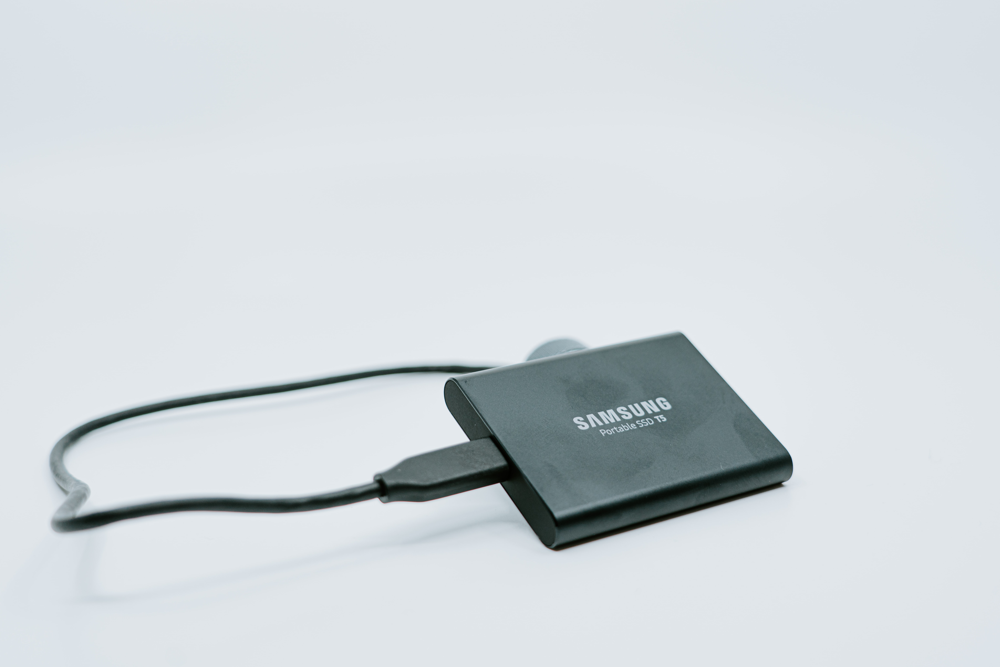

SSD는 정식 명칭은 Solid State Drive. 직역하면 고형 상태 보조기억장치로, Solid-state는 고체상태와 소체(트랜지스터)를 뜻한다. 
간혹 SSD 하드디스크, SSD하드 등으로 SSD를 하드디스크 계열로 표기하는 오류를 보인다. SSD와 하드디스크는
구조부터 다르므로 표기에 주의하자. 대신 용도는 모두 기억장치다. 출력장치인 액정디스플레이와 AMOLED
디스플레이와 비슷한 사례이다. 한때나마 HDD는 고정형 보조기억장치를 뜻하는 Fixed Drive로 표기되었다.
이런 기준으로 분류한다면 SSD와 HDD가 같은 종류로 묶일지도 모른다. 어디까지나 말이 저렇지 둘은 원래부터
다른 장비다. HDD를 대체하려고 개발된 보조저장장치. HDD는 자기 디스크, 이쪽은 플래시 메모리로 구성된다.
구동부(모터)가 없어서 소음도 대폭으로 감소했다. 일반용은 소모 전력이랑 발열 수준도 낮아서 데스크탑용 3.5인치
HDD를 사용했을 때와는 매우 다르다. 이런 식으로 회전판을 제거한 컴퓨터가 제로스핀이다.
SSD의 가장 큰 장점은 데이터 입/출력 속도이다. 파일 전송 속도가 HDD에 비해 매우 빠르다.
HDD의 연속 데이터 읽기/쓰기 속도는 데스크탑에 흔히 쓰이는 3.5인치 7200rpm 2~3TB급 제품의
플래터 외곽구간 기준으로 최대 200MB/s까지 측정되나, 실사용 중에는 60~150MB/s 정도에 그친다.
1MB 이하의 작은 파일이 많으면 속도 차이가 커진다. 반면 SSD는 컨트롤러에 따라 다르지만 SATA-3
규격 모델은 약 500~550MB/s 정도, 최근 아무리 느린 제품이라고 해도 350~400MB/s 정도는 가뿐히 나온다.
예를 들자면, MacBook Pro 2018년형에 탑재된 SSD는 3000MB/s의 속도를 자랑한다! NVMe 인터페이스를 사용하는
모델에서는 12GB/s에 달하는 기업용 제품까지 다양하다. 이 신속한 입출력 속도 때문에 같은 시가의 HDD 대비 낮은
최대 저장 용량을 가졌음에도 대중적으로 애용된다. 다만 빠른 속도로 SSD의 최대용량이 늘어나 현재는 최대 용량 기준으로
2배 (SSD: 8TB, HDD: 16TB) 로 그 간격이 좁혀져 있는 상황이다.
그 다음 장점은 아주 작고 가볍다는 점이다. 하드디스크는 플래터와 그 플래터를 감싸는 몸체, 플래터를 구동하기
위한 모터 등의 구조물로 인해 일정한 두께 이하로 줄이기 어려우며 그로 인해 무게가 어느정도 나갔는데, SSD는
겉을 감싸는 얇은 케이스와 기판, mSATA나 M.2는 케이스마저도 없이 기판만으로만 이루어져 있어 HDD 대비 상당히 가볍고,
작은 사이즈를 구현할 수 있다. 이걸 더 소형화한 게 USB 메모리로도 자주 쓰이는 플래시 메모리이다.
부팅이나 3D 렌더링 등 실사용 퍼포먼스를 좌우하는 랜덤 액세스 속도에 특히 우위를 가진다. HDD가 연속하지 않은 데이터를
읽기 위해 움직이는 데 걸리는 시간이 10~20ms인 데 비해 SSD는 구동부가 없어 0.1ms 미만의 시간에 접근이 가능하니 비교가
불가능한 수준.